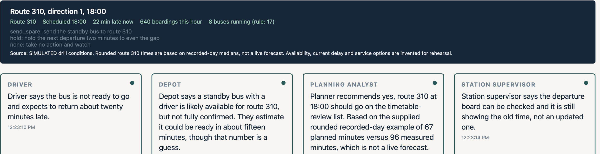

An AI co-pilot for Dubai's bus control centre.
of evening departures leave five or more minutes late.
19% in the morning. The same crowd: 48,724 boardings at 08:00, 49,707 at 18:00.
About 80 buses' worth of trip time goes missing every evening rush.
Live since 6 July 2026: more than 1,100 buses, 26 scenarios, on RTA's Dataiku platform. It used to take 30 to 60 minutes. The calls to staff are still made by hand.
Insiyab
Warns early
trip forecast 30 minutes ahead
RTA DSS
Picks the bus
in under a minute
Insiyab
Checks with staff
driver, depot, station, planning, at once
Insiyab
One briefing
the DSS pick and every answer
Controller
Decides
always a person
Insiyab
Tells everyone
and collects each confirmation
The DSS picks the bus. Insiyab handles the people.
18 November 2026 · 4 reports · 1 human decision · 4 confirmations

We see it coming.
When a bus is still out on its last trip as its next one is due, that departure leaves five or more minutes late 85 times in 100.
Closer than the timetable.
Trip times forecast on 2,043 evening trips the model never saw: 6.97 minutes off, against 8.25.
We measure controller time on calls, departures leaving late, and small events planned.
The controller decides.
Insiyab does the calling.
Backup
In April 2026 the UAE Cabinet set a goal: agentic AI across 50% of government operations within two years.
Insiyab is one bounded step of that kind: an agent that gathers facts and relays a person's decision, for a service half a million people use every day. It also serves We the UAE 2031, the National AI Strategy 2031, the Dubai Economic Agenda D33 and the Dubai 2040 Urban Master Plan.
Backup
Riders could earn nol Plus points for a short, opt-in survey. RTA already runs the points.
Play Store downloads of Google Opinion Rewards (Sept 2024). In the UAE since April 2020.
the global insights industry in 2024. Brands pay to learn what customers think.
points on metro, bus, taxi and parking, redeemable as nol credit or partner discounts.
RTA records in Dataiku. Running times, fleet list and nol card taps for Monday 15 December 2025: 1,056,343 taps, 544,583 check-ins, 11,201 trips. Not public; rows stay on RTA's platform.
RTA control-centre and planning staff, in conversation with the team, 18 November 2026: six controllers per shift, about 1,400 buses, manual coordination.
RTA, bus passengers by route, monthly. Dubai open data (dataset 459793): 15.28 million bus journeys in December 2025.
Insiyab analysis. Forecast tested on 2,043 evening trips not used in training; 244 bus hours 16:00 to 18:59; the calling drill on 18 November 2026. Code and method in the shared source package.
Open-Meteo historical weather; UAE public holidays and school terms (Khaleej Times, checked against u.ae).
RTA press release, 6 July 2026: the Decision Support System (1,100+ buses, 26 scenarios, under one minute). Dubai Media Office, 23 April 2026; UAE and Dubai strategy portals.
Photographs. Irshad Ahmad, Dwi Setyo, Nihongraphy (Pexels License); Noah Wulf, CC BY-SA 4.0; Rob Dammers, CC BY-SA 2.0 (Wikimedia Commons). Bus stop and control room are representative images, not RTA's.